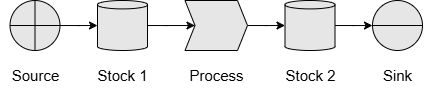

Chapter 1: Getting Started
Welcome to your first QuokkaSim simulation! In this chapter you will
- Install Rust
- Create a new Rust project
- Add QuokkaSim as a dependency
- Write and run a minimal "hello world" simulation
1.1. Install Rust
Follow the instructs on the Rust Lang website to install Rust on your operating system. These instructions will help you install:
rustup, the Rust installer, andcargo, the Rust package manager
To check if installation is successful, use cargo -V to check which version of Cargo you have installed.
1.2. Create a new Rust project
If you don’t already have a project, open a terminal and run:
cargo new hello‐quokkasim
cd hello‐quokkasim
This creates a fresh binary crate with src/main.rs.
1.3. Add QuokkaSim to Cargo.toml
To add QuokkaSim as a dependency, use cargo add quokkasim or add the following to your Cargo.toml file before running cargo fetch:
[dependencies]
quokkasim = "0.1.0"
1.4. Write your first Simulation
In your main.rs file, paste in the following code at the top. This imports the required objects, and also creates our ComponentModel and ComponentLogger enums, which we will learn about later.
#![allow(unused)] fn main() { use std::{error::Error, fs::create_dir_all, time::Duration}; use quokkasim::{define_model_enums, prelude::*}; define_model_enums! { pub enum ComponentModel {} pub enum ComponentModelAddress {} pub enum ComponentLogger {} pub enum ScheduledEventConfig {} } impl CustomComponentConnection for ComponentModel { fn connect_components(a: &mut Self, b: &mut Self, n: Option<usize>) -> Result<(), Box<dyn Error>> { match (a, b) { (a, b) => Err(format!("No component connection defined from {} to {} (n={:?})", a, b, n).into()), } } } impl CustomLoggerConnection for ComponentLogger { type ComponentType = ComponentModel; fn connect_logger(a: &mut Self, b: &mut Self::ComponentType, n: Option<usize>) -> Result<(), Box<dyn Error>> { match (a, b, n) { (a, b, _) => Err(format!("No logger connection defined from {} to {} (n={:?})", a, b, n).into()), } } } }
Next we create the individual interactive components of our simulation

Stock 1 hold some quantity of material, which Process moves at specific times, into Stock 2. Add the following into the main() function to create these components, and to connect them together.
#![allow(unused)] fn main() { let mut source = ComponentModel::VectorSourceVector3( VectorSource::new() .with_name("Source".into()) // A unique, human readable name .with_code("SRC".into()) // A unique code, for readable logging .with_process_quantity_distr(Distribution::Constant(50.)) // Quantity of resource to create .with_process_time_distr(Distribution::Constant(90.)) // Time taken to create resource .with_source_vector([1., 4., 5.].into()), // Composition of the resource Mailbox::new() ); let mut stock_1 = ComponentModel::VectorStockVector3( VectorStock::new() .with_name("Stock 1".into()) .with_code("ST1".into()) .with_low_capacity(10.) // Threshold to consider the stock 'empty' .with_max_capacity(100.) // Threshold to consider the stock 'full' .with_initial_vector([40., 40., 0.].into()), // Initial composition of the stock Mailbox::new() ); let mut process = ComponentModel::VectorProcessVector3( VectorProcess::new() .with_name("Process".into()) .with_code("PRC".into()) .with_process_quantity_distr(Distribution::Constant(20.)) .with_process_time_distr(Distribution::Constant(30.)), Mailbox::new() ); let mut stock_2 = ComponentModel::VectorStockVector3( VectorStock::new() .with_name("Stock 2".into()) .with_code("ST2".into()) .with_low_capacity(10.) .with_max_capacity(100.) .with_initial_vector([0., 0., 0.].into()), Mailbox::new() ); let mut sink = ComponentModel::VectorSinkVector3( VectorSink::new() .with_name("Sink".into()) .with_code("SNK".into()) .with_process_quantity_distr(Distribution::Constant(16.)) .with_process_time_distr(Distribution::Constant(20.)), Mailbox::new() ); connect_components!(&mut source, &mut stock_1).unwrap(); connect_components!(&mut stock_1, &mut process).unwrap(); connect_components!(&mut process, &mut stock_2).unwrap(); connect_components!(&mut stock_2, &mut sink).unwrap(); }
Next we'll add some Logger instances to report on what occurs during the simulation, and connect them to our Process and Stock components.
#![allow(unused)] fn main() { let mut process_logger = ComponentLogger::VectorProcessLoggerVector3(VectorProcessLogger::new("ProcessLogger".into())); let mut stock_logger = ComponentLogger::VectorStockLoggerVector3(VectorStockLogger::new("StockLogger".into())); connect_logger!(&mut process_logger, &mut source).unwrap(); connect_logger!(&mut process_logger, &mut process).unwrap(); connect_logger!(&mut process_logger, &mut sink).unwrap(); connect_logger!(&mut stock_logger, &mut stock_1).unwrap(); connect_logger!(&mut stock_logger, &mut stock_2).unwrap(); }
Then we create our Simulation object sim, which controls the progression of the simulation.
#![allow(unused)] fn main() { let mut sim_builder = SimInit::new(); sim_builder = register_component!(sim_builder, stock_1); sim_builder = register_component!(sim_builder, stock_2); sim_builder = register_component!(sim_builder, source); sim_builder = register_component!(sim_builder, process); sim_builder = register_component!(sim_builder, sink); let start_time = MonotonicTime::try_from_date_time(2025, 1, 1, 0, 0, 0, 0).unwrap(); let mut simu = sim_builder.init(start_time).unwrap().0; }
We send and initialisation events, tell our simulation to run for an hour, and write the resulting logs to CSV files.
#![allow(unused)] fn main() { simu.step_until(start_time + Duration::from_secs(300)).unwrap(); let output_dir = "outputs/source_sink"; create_dir_all(output_dir).unwrap(); stock_logger.write_csv(output_dir).unwrap(); process_logger.write_csv(output_dir).unwrap(); }
Our main.rs file is now complete (or refer to the Full Code below if you think you're missing something).
Use cargo run to run the simulation, and we have our logs in the outputs/source_sink directory!
1.5. Exercises
Want to start playing around immediately? Here are some ideas of things you can try before moving on with the rest of the book!
- 5 minutes is simulated to begin with. What if we simulate for longer?
- The initial simulation begins with signicant stock in
Stock 1. What happens if it starts empty? - What if instead of a sink removing material from the system, we make
Stock 2bigger and see how long it takes to fill up? - What if we add an additional sink that takes directly from
Stock 1, or an addition source that feeds directly intoStock 2? - What if there were no source or sink, but instead an additional process from
Stock 2intoStock 1? - What if we want to have logs for
SourceandSinksave into their own log files?
Full Code
use std::{error::Error, fs::create_dir_all, time::Duration}; use quokkasim::{define_model_enums, prelude::*}; define_model_enums! { pub enum ComponentModel {} pub enum ComponentModelAddress {} pub enum ComponentLogger {} pub enum ScheduledEventConfig {} } impl CustomComponentConnection for ComponentModel { fn connect_components(a: &mut Self, b: &mut Self, n: Option<usize>) -> Result<(), Box<dyn Error>> { match (a, b) { (a, b) => Err(format!("No component connection defined from {} to {} (n={:?})", a, b, n).into()), } } } impl CustomLoggerConnection for ComponentLogger { type ComponentType = ComponentModel; fn connect_logger(a: &mut Self, b: &mut Self::ComponentType, n: Option<usize>) -> Result<(), Box<dyn Error>> { match (a, b, n) { (a, b, _) => Err(format!("No logger connection defined from {} to {} (n={:?})", a, b, n).into()), } } } fn main() { /* * Create components */ let mut source = ComponentModel::VectorSourceVector3( VectorSource::new() .with_name("Source".into()) // A unique, human readable name .with_code("SRC".into()) // A unique code, for readable logging .with_process_quantity_distr(Distribution::Constant(50.)) // Quantity of resource to create .with_process_time_distr(Distribution::Constant(90.)) // Time taken to create resource .with_source_vector([1., 4., 5.].into()), // Composition of the resource Mailbox::new() ); let mut stock_1 = ComponentModel::VectorStockVector3( VectorStock::new() .with_name("Stock 1".into()) .with_code("ST1".into()) .with_low_capacity(10.) // Threshold to consider the stock 'empty' .with_max_capacity(100.) // Threshold to consider the stock 'full' .with_initial_vector([40., 40., 0.].into()), // Initial composition of the stock Mailbox::new() ); let mut process = ComponentModel::VectorProcessVector3( VectorProcess::new() .with_name("Process".into()) .with_code("PRC".into()) .with_process_quantity_distr(Distribution::Constant(20.)) .with_process_time_distr(Distribution::Constant(30.)), Mailbox::new() ); let mut stock_2 = ComponentModel::VectorStockVector3( VectorStock::new() .with_name("Stock 2".into()) .with_code("ST2".into()) .with_low_capacity(10.) .with_max_capacity(100.) .with_initial_vector([0., 0., 0.].into()), Mailbox::new() ); let mut sink = ComponentModel::VectorSinkVector3( VectorSink::new() .with_name("Sink".into()) .with_code("SNK".into()) .with_process_quantity_distr(Distribution::Constant(16.)) .with_process_time_distr(Distribution::Constant(20.)), Mailbox::new() ); connect_components!(&mut source, &mut stock_1).unwrap(); connect_components!(&mut stock_1, &mut process).unwrap(); connect_components!(&mut process, &mut stock_2).unwrap(); connect_components!(&mut stock_2, &mut sink).unwrap(); /* * Create loggers */ let mut process_logger = ComponentLogger::VectorProcessLoggerVector3(VectorProcessLogger::new("ProcessLogger".into())); let mut stock_logger = ComponentLogger::VectorStockLoggerVector3(VectorStockLogger::new("StockLogger".into())); connect_logger!(&mut process_logger, &mut source).unwrap(); connect_logger!(&mut process_logger, &mut process).unwrap(); connect_logger!(&mut process_logger, &mut sink).unwrap(); connect_logger!(&mut stock_logger, &mut stock_1).unwrap(); connect_logger!(&mut stock_logger, &mut stock_2).unwrap(); /* * Build simulation */ let mut sim_builder = SimInit::new(); sim_builder = register_component!(sim_builder, stock_1); sim_builder = register_component!(sim_builder, stock_2); sim_builder = register_component!(sim_builder, source); sim_builder = register_component!(sim_builder, process); sim_builder = register_component!(sim_builder, sink); let start_time = MonotonicTime::try_from_date_time(2025, 1, 1, 0, 0, 0, 0).unwrap(); let mut simu = sim_builder.init(start_time).unwrap().0; /* * Run simulation */ simu.step_until(start_time + Duration::from_secs(300)).unwrap(); let output_dir = "outputs/source_sink"; create_dir_all(output_dir).unwrap(); stock_logger.write_csv(output_dir).unwrap(); process_logger.write_csv(output_dir).unwrap(); }